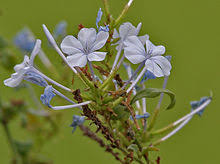

Plumbaginaceae
The Plumbaginaceae family, commonly known as the Leadwort Family, Plumbago Family, or Sea Lavender Family, is a widespread family of flowering plants in the order Caryophyllales. It includes approximately 24-27 genera and around 800 species of herbs, shrubs, and lianas. Members of this family are often adapted to harsh environments such as salt marshes, coastal areas, steppes, and deserts (halophytes and xerophytes), and they have a nearly cosmopolitan distribution, with centers of diversity in the Mediterranean region and Central Asia.
Overview
Plumbaginaceae is characterized by its diverse habits, ranging from cushion-forming herbs (Armeria) and rosette-forming perennials (Limonium) to scrambling shrubs and lianas (Plumbago). A key feature often found on the leaves are specialized glands (chalk glands or hydathodes) that excrete excess mineral salts, visible as small white dots or crusts, reflecting their adaptation to saline soils. The flowers are typically 5-parted, often brightly colored, and frequently exhibit heterostyly (different style and stamen lengths in different individuals) to promote cross-pollination. The calyx is notably persistent, often papery or membranous and sometimes brightly colored, enclosing the dry, single-seeded fruit.
The family is divided into two main subfamilies, Plumbaginoideae (including Plumbago, Ceratostigma) and Staticoideae (or Limonioideae, including Limonium, Armeria), which differ in features like style fusion and pollen morphology. Several species are cultivated as ornamentals, including various Plumbago, Armeria (Thrift or Sea Pink), and Limonium (Statice or Sea Lavender), the latter often used as dried 'everlasting' flowers due to their persistent, colorful calyces.
Phylogenetically, Plumbaginaceae is placed within the core Caryophyllales and is considered most closely related to the Polygonaceae (Buckwheat family).
Quick Facts
- Scientific Name: Plumbaginaceae
- Common Name: Leadwort Family, Plumbago Family, Sea Lavender Family
- Number of Genera: Approximately 24-27
- Number of Species: Approximately 775-830
- Distribution: Cosmopolitan, especially Mediterranean, Central Asia, coasts, salt marshes, arid regions.
- Evolutionary Group: Eudicots - Core Eudicots - Caryophyllales
Key Characteristics
Growth Form and Habit
Mostly perennial herbs (often forming basal rosettes or cushions), shrubs, or lianas; rarely annual herbs. Many species are adapted to saline (halophytes) or dry (xerophytes) conditions.
Leaves
Leaves are usually alternate or arranged in basal rosettes; rarely opposite. They are simple, with margins typically entire but sometimes lobed. Leaf texture can be leathery or somewhat fleshy. Stipules are absent. A characteristic feature is the presence of epidermal chalk glands (salt-secreting hydathodes) on the leaf surface in many species, appearing as white dots or a crust.
Inflorescence
Inflorescence structure is diverse, often based on cymose units aggregated into panicles, spikes, racemes, or dense, compact heads (capitula), as seen in Armeria. Inflorescence bracts are frequently present and often dry and membranous (scarious).
Flowers
Flowers are typically actinomorphic (radially symmetrical), bisexual, and 5-parted (pentamerous). Heterostyly (pin and thrum forms) is common. Key features include:
- Calyx: Tubular, typically 5-lobed, often ribbed, and frequently scarious or membranous between the lobes. The calyx is characteristically persistent, often enlarging and becoming papery or brightly colored in fruit, aiding dispersal or protection.
- Corolla: Usually sympetalous (petals fused, at least basally), forming a tube with 5 spreading lobes (salverform or funnelform), although petals can be nearly free in some genera. Colors are variable, including blue, violet, pink, red, white, or yellow.
- Androecium: Features 5 stamens. They are positioned opposite the corolla lobes (if the corolla has a distinct tube) or opposite the petals (if petals are fused only at the base - obdiplostemonous condition). Filaments are attached to the corolla tube or near the base of the petals.
- Gynoecium: Features a superior ovary composed of 5 fused carpels, but forming a single locule (chamber) containing a single basal ovule. There are typically 5 styles, which may be free from the base or fused partway up. Stigmas are linear or capitate (knob-like).
Fruits and Seeds
The fruit is typically a dry, one-seeded structure, usually an achene or a circumscissile capsule (utricle) that opens via a lid. The fruit remains enclosed within the persistent, often papery or wing-like calyx, which may aid in wind or water dispersal. The seed is single.
Chemical Characteristics
Contains various secondary metabolites. Plumbagin (a naphthoquinone with reported biological activity) is characteristic of Plumbago. Tannins and flavonoids are also common. Unlike many core Caryophyllales families, Plumbaginaceae lack betalain pigments and produce anthocyanins instead.
Field Identification
Identifying Plumbaginaceae involves recognizing their habitat preferences and distinct floral and vegetative features:
Primary Identification Features
- Habit: Herbs, shrubs, lianas, often in coastal, saline, or arid habitats.
- Leaves: Usually alternate or in basal rosettes, simple, entire, no stipules. Often with visible chalk glands (white dots/crusts).
- Flowers: Usually 5-parted, actinomorphic, often heterostylous.
- Calyx: Persistent, tubular, 5-lobed, often ribbed and/or papery/membranous/colored, enclosing the fruit.
- Corolla: Usually sympetalous (petals fused into a tube), 5-lobed.
- Stamens: 5, positioned opposite the corolla lobes or petals.
- Ovary: Superior, 1-locular, 1 basal ovule, usually with 5 styles or style branches.
- Fruit: Dry, 1-seeded (achene/utricle), enclosed by persistent calyx.
Seasonal Identification Tips
- The persistent, often papery and sometimes colorful calyces surrounding the fruit are a key diagnostic feature visible long after flowering.
- Chalk glands on leaves can be observed year-round on living foliage.
- Flower structure (5 parts, fused corolla, 5 stamens opposite lobes, 5 styles) is crucial during blooming.
Common Confusion Points
Distinguishing Plumbaginaceae from similar families:
- Polygonaceae (Buckwheat Family): Often have sheathing stipules (ocreae), which are absent in Plumbaginaceae. Flowers usually have tepals, not distinct calyx/corolla, and typically more than 5 stamens or different style numbers.
- Caryophyllaceae (Carnation Family): Often have opposite leaves with swollen nodes, petals are typically free (not fused), and fruit is usually a many-seeded capsule opening by valves or teeth.
- Frankeniaceae (Sea Heath Family): Also often halophytes with small leaves, but typically have opposite leaves, free petals, and capsular fruit with parietal placentation and multiple seeds.
- Asteraceae (Sunflower Family): Some Armeria species with dense flower heads might superficially resemble composites, but Asteraceae flowers (florets) are arranged on a receptacle surrounded by involucral bracts, have an inferior ovary, and produce achenes often with a pappus.
- The combination of features like chalk glands, persistent papery/ribbed calyx, sympetalous corolla, 5 stamens opposite the lobes, superior ovary with 1 basal ovule and 5 styles is highly characteristic of Plumbaginaceae.
Field Guide Quick Reference (Plumbaginaceae)
Look For:
- Herbs/shrubs/lianas (often saline/dry habitats)
- Leaves: Simple, often basal rosette, no stipules, often chalk glands
- Flowers: 5-parted, often heterostylous
- Calyx: Persistent, papery/ribbed, 5-lobed
- Corolla: Usually sympetalous, 5-lobed
- Stamens: 5, opposite petals/lobes
- Ovary: Superior, 1-locular, 1 basal ovule
- Styles/Stigmas: Usually 5
- Fruit: Dry, 1-seeded, in persistent calyx
Key Distinctions:
- Persistent papery/ribbed calyx
- Chalk glands on leaves (common)
- 5 stamens opposite corolla lobes
- Superior ovary, 1 basal ovule, 5 styles
- No ocreae (vs. Polygonaceae)
- Sympetalous corolla (usually) & fruit type (vs. Caryophyllaceae)
Notable Examples
Plumbaginaceae includes several well-known genera, popular both in the wild and in cultivation:

Plumbago spp.
Leadworts, Plumbagos
A genus of shrubs and lianas found in warmer regions worldwide. Known for their often blue (e.g., P. auriculata, Cape Leadwort) or white flowers with a long corolla tube and a calyx covered in sticky glandular hairs. The name derives from supposed medicinal properties related to lead poisoning.

Limonium spp.
Sea Lavenders, Statice
A large and diverse genus of mostly perennial herbs, often with basal leaf rosettes, found globally, especially in coastal and saline habitats. They produce branched panicles (often one-sided) of small flowers with inconspicuous corollas but highly conspicuous, colorful, papery calyces, making them popular as dried 'everlasting' flowers.

Armeria spp.
Thrifts, Sea Pinks
A genus of perennial herbs forming dense cushions or rosettes of grass-like leaves. They are characterized by long, leafless stalks (scapes) bearing dense, globose heads of pink, purple, or white flowers. Common in coastal and alpine regions of the Northern Hemisphere and South America. A. maritima is widely cultivated.

Ceratostigma spp.
Hardy Plumbagos
A small genus of shrubs and subshrubs native to Asia and Africa. Species like C. plumbaginoides are cultivated for their late-season, vibrant blue flowers and attractive reddish autumn foliage.
Phylogeny and Classification
Plumbaginaceae is firmly placed within the order Caryophyllales, part of the Core Eudicots. Within this large order, Plumbaginaceae belongs to the core Caryophyllales clade but sits outside the largest group containing families like Caryophyllaceae, Amaranthaceae, and Cactaceae.
Molecular phylogenetic studies consistently show Plumbaginaceae as being most closely related to the family Polygonaceae (Buckwheat family). Together, Plumbaginaceae and Polygonaceae form a well-supported clade, which in turn is related to other families adapted to harsh environments, such as Frankeniaceae (Sea Heaths) and Tamaricaceae (Tamarisks), as well as the carnivorous families Droseraceae (Sundews) and Nepenthaceae (Pitcher Plants). This entire group represents a distinct lineage within the broader Caryophyllales order.
Position in Plant Phylogeny
- Kingdom: Plantae
- Clade: Angiosperms (Flowering plants)
- Clade: Eudicots
- Clade: Core Eudicots
- Order: Caryophyllales
- Family: Plumbaginaceae
Evolutionary Significance
Plumbaginaceae holds evolutionary significance for several reasons:
- Its widespread distribution and frequent adaptation to extreme environments (saline, arid, alpine) make it a model for studying plant stress tolerance and ecological adaptation.
- The characteristic persistent calyx, often modified for dispersal, represents an interesting evolutionary innovation.
- The common occurrence of heterostyly within the family provides insights into the evolution of plant reproductive systems and mechanisms promoting outcrossing.
- Its close phylogenetic relationship with Polygonaceae highlights a major lineage within Caryophyllales characterized by features like basal placentation and often single-seeded fruits.
- Many species are important horticultural plants, demonstrating successful adaptation and aesthetic appeal.